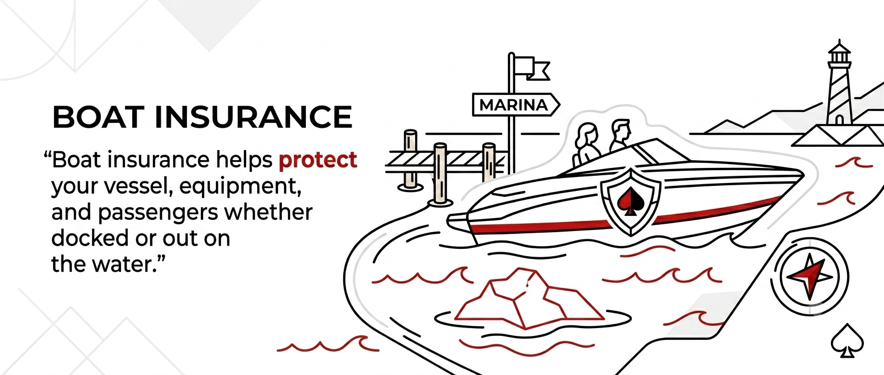

Boat Insurance
Coverage for your boat, gear, and passengers.

Coverage for your boat, gear, and passengers.
Boat insurance helps protect your vessel, equipment, and passengers whether docked or out on the water.
Many policies include coverage for weather-related damage. We help you choose the right protection.
Yes. Risks like theft, fire, and storms can occur even when the boat isn’t in use.